GateReeve
What is GateReeve?
GateReeve takes an idea from discovery through design, specification, implementation, review, and closeout while preserving the reasoning and evidence needed to trust the result. Another way to read it is as a set of nested execution, delivery, learning, and stewardship loops that let agents work autonomously while still improving under human governance.
The name borrows from the historical reeve: the local official who enforced standards and kept order on the community's behalf. A gate-reeve keeps the gates — and in this workflow every gate is a decision point with explicit pass conditions that work must clear before it moves on.
The premise. The core premise is simple: human judgment belongs at the boundaries. The developer clarifies intent up front, gives the agent enough context and autonomy to execute, then validates the result with tests, rubric checks, pattern review, adversarial judge review, and human review.
Gates and artifacts. The workflow is gate-based and artifact-driven. Each stage leaves durable records: intent, specifications, plans, decisions, verification evidence, review results, and closeout notes. Those artifacts keep the work inspectable and prevent important context from disappearing into chat history.
Learning and stewardship. The outer loops are still under development, but they are central to the direction of the workflow. The learning loop turns mistakes into better guidelines, checks, or tools; the stewardship loop periodically reviews whether those rules, skills, and tools still fit the way the models and workflow are evolving. Pattern review is the beginning of the learning loop, evaluating code against durable coding-standard patterns so recurring problems can be prevented instead of rediscovered.
How to read this page. Read this as both a philosophy and a model. The opening sections explain the operating principles; the diagrams that follow use a compact key to show the gate spine, workflow layers, artifact flow, nested loop view, and supporting skills that make the process repeatable. In practice, the workflow is implemented through user-level agent skills that drive the gates, artifacts, reviews, and closeout steps described below.
The Philosophy: Structure, Autonomy, Proof
The workflow works because human attention is concentrated where judgment changes the outcome. The developer leads the setup, lets the agent move with autonomy inside clear boundaries, then owns the proof that the result is ready for another human to spend time on.
Specify clearly
Clarify intent, pressure-test assumptions, write acceptance criteria, and turn the work into observable pass/fail conditions. The agent should start with enough context to solve the right problem.
Let the agent execute
The agent inspects, edits, runs tools, tests, and advances the work. The human watches the trajectory and steps in for judgment calls, changed direction, or scope decisions. This is oversight without approving every small move.
Validate hard
Run focused tests, evaluate the rubric, inspect the diff, review patterns, run an independent LLM-as-judge pass, and close the loop on findings. The output should carry concrete evidence before it reaches a human reviewer.
Workflow Loops
The workflow can also be read as four nested loops operating at different time scales: execution inside the current task, delivery through gated branch workflow, learning from misses, and periodic stewardship of the whole agentic system.
The Workflow Model
After the loop framing, the rest of this page turns the philosophy into an inspectable model. The key below defines the diagram grammar, and the sections that follow show different structural views of the same workflow: the gate sequence, the layered workflow, the artifact flow, and the concrete checks that happen at each boundary. Read them as complementary lenses, not separate processes.
Diagram key
Activity
Interviewing, drafting, implementation, review, remediation, and closeout. Activities consume context and produce artifacts or evidence.
Artifact
Markdown docs, reports, trackers, learning events, and PR descriptions. Artifacts carry knowledge forward and provide evidence for gates.
Gate
A decision point with explicit pass conditions. Gates may be human, deterministic, agentic, or mixed, but they should leave a traceable result.
Deterministic State, Agentic Work
New features use a versioned GateReeve protocol. The model constrains
passage between durable states while agents retain freedom to investigate,
implement, review, and remediate inside the current state. The plugin owns
this governance; the optional gatereeve CLI observes and
submits semantic passages to the same core.
Feature lifecycle
Slice lifecycle
PR-boundary items are first-class, but they are nested gate records rather
than peer feature states. Each records outcome, evidence, fingerprint,
freshness, eligibility, and blockers. Design/spec/plan/slice discoveries
are likewise first-class change records with their own lifecycle, so
learning changes the visible plan without pretending the feature moved
backward in time. Use gatereeve status for the operational
overview and gatereeve graph for the current projection.
Gate Spine
The gate spine shows the enforced sequence at a glance: where work can move forward, where it must loop back, and what kind of evidence is required to proceed. Select a gate to see its purpose, inputs, outputs, and pass condition inline.
Workflow Layers
The same sequence is split into activity, output artifacts, and exit gate lanes. This view makes the workflow mechanics explicit: what work happens, what durable records are produced, and where a proceed-or-loop decision is required. Select the boundary review activity or an exit gate to inspect its detail in place.
scratchpad.mdtests and code changes
updated issues
checkpoint
Artifact Flow
Artifact Flow shows how durable context accumulates as the work advances: interview answers become design intent, design intent becomes acceptance criteria, implementation creates decision memory, and the PR boundary converts the full branch context plus current diff into review evidence. The live codebase and current diff are living source context rather than static artifacts, but they remain essential inputs to later decisions.
interview.md
existing codebase
interview.md
design.md
spec.md
plan.md
issues.md
tracker.md
decisions.md
current diff
verification output
interview.md
captures design-phase answers and rationale;
scratchpad.md
captures implementation-time decisions; human-promoted decisions move into
decisions.md.
pattern-learn.
This is the meta loop: misses become structured learning inputs rather
than one-off review comments.
Pattern Rules and the Learning Loop
Pattern Review is the concrete meta loop in the workflow. Repeated mistakes, review comments, coding standards, and project-specific conventions become durable rules. Those rules are then applied at PR boundaries so the same class of problem is caught earlier the next time.
This is deliberately hybrid. Deterministic code owns the mechanics: schemas, lifecycle buckets, rule storage, path scoping, trigger matching, and persisted reports. The probabilistic AI handles the judgment-heavy part: deciding whether a rule really applies to a particular diff and explaining the evidence. That balance is a useful pattern for agentic skills generally.
Rules as validation
rules.yaml
contains the durable standards to apply.
pattern-review.md
records pass/fail evidence for the PR boundary.
Learning cycle
pattern-learn
Classify learning events and turn recurring misses into candidate
rules.
creates proposals
pattern-review
Run the PR-boundary gate against the current diff and active rules.
prevents recurrence
pattern-extract
Bootstrap candidate rules from instruction prose, coding standards, and
repo guidance.
seeds proposals
pattern-promote
A human accepts, edits, defers, or rejects proposals before they become
active.
governs changes
pattern-init
Create the local pattern-review buckets for a repository, worktree, or
scope.
sets up storage
Rule anatomy
A rule is small, inspectable, and evidence-backed. The important split is
between deterministic fields such as scope,
trigger, and severity, and the agentic review
instruction that tells the LLM what judgment to apply.
- id: client-api-access-through-stores
title: Client API access must go through stores
description: Vue components must not call remote APIs directly.
rationale: Preserves the UI / data-access boundary.
scope:
paths:
- public/**/*.vue
- public/**/*.js
trigger:
mode: diff
addedContains:
- "$axios"
severity: blocker
review:
mode: agentic
instructions: Inspect changed components for direct API access.
evidence:
sourceSummary: Repeated PR review finding.
examples:
good: Component calls a store action.
bad: Component calls this.$axios directly.PR Boundary Review
The PR boundary turns implementation work into reviewable evidence. It is not a single check. It is a coordinated stack of skills that reconcile the workflow record, evaluate the implementation against the spec, apply durable pattern rules, run adversarial judge review, perform code-review-style inspection, explain the final diff, and preserve the decisions that should survive the branch. This section decomposes that boundary into the concrete review activities and artifacts a human reviewer can trust.
Evidence assembly path
Reconcile
Evaluate
Pattern review
Judge
judge.md.
PR review
code-review.md.
Explain diff
explain-diff.html.
Ready evidence
Agentic Development Superpowers
These practices are orthogonal to the workflow diagrams, but they change the practical ceiling of agentic software development. They reduce coordination friction, increase agent autonomy, and keep the developer in the role of facilitator rather than bottleneck.
YOLO Mode
YOLO Mode is a deliberate tradeoff: it increases productivity by giving the agent more autonomy, but it also increases risk. The harnesses warn about this because the agent may be able to edit files, run commands, use the network, or reach systems that normally require explicit approval. Choosing this mode requires extra diligence: decide whether the surrounding guardrails are sufficient, including worktrees, review gates, limited credentials, and whether VPN access to shared stages should be enabled at all.
The disclosure sections below show how to enable the most autonomous mode in each supported harness. The exact label differs by product, but the goal is the same: reduce routine approval prompts enough for the agent to work without constant human mediation.
Visual Studio Code with Claude Code
The Claude Code extension calls this permission level
Bypass permissions. The VS Code setting that makes it
available is labeled Claude Code: Allow Dangerously Skip Permissions.
-
Open Visual Studio Code settings from the application menu:
Code → Preferences → Settings.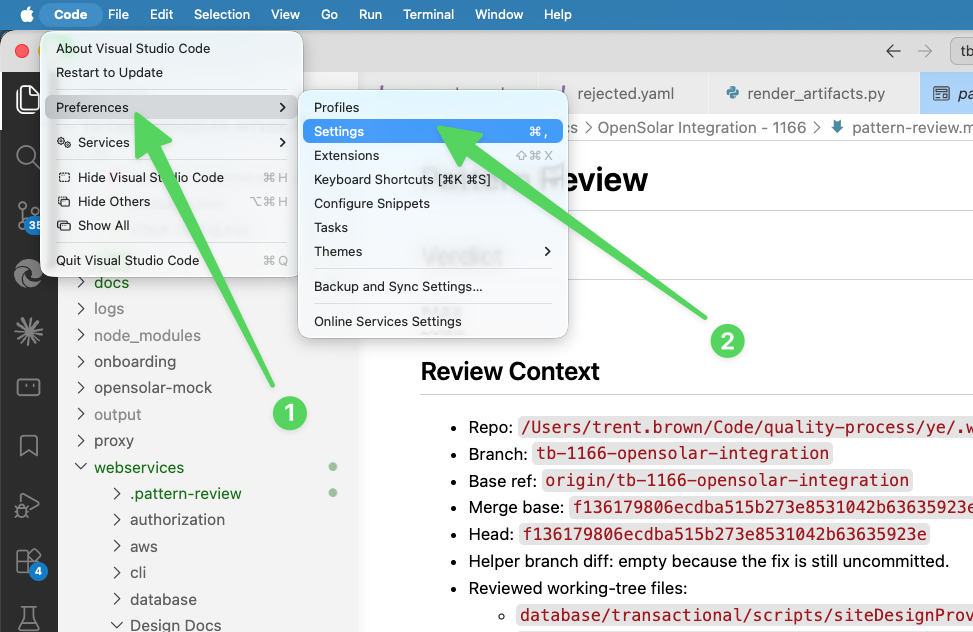
Open settings from the application menu. -
Search the settings page for
@ext:Anthropic.claude-code. -
Enable
Claude Code: Allow Dangerously Skip Permissions.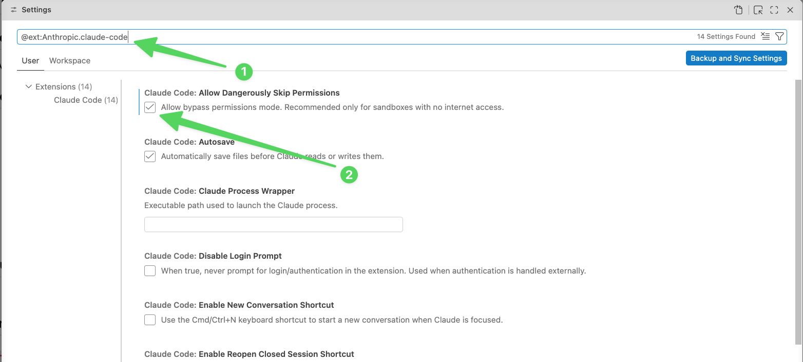
Filter to the Claude Code extension settings, then enable the permission. - Dismiss settings and open a new Claude Code session from the right sidebar.
- Open the mode selector at the bottom of the Claude Code prompt box.
-
Choose
Bypass permissions.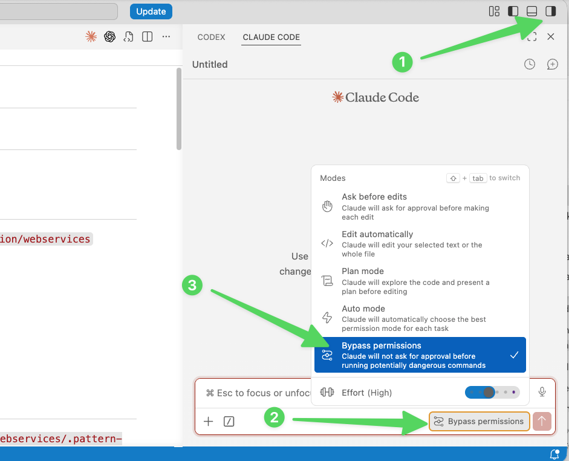
Start a new Claude Code session, open the mode selector, and choose Bypass permissions.
Claude Code may sometimes revert to a less permissive mode,
especially across new sessions. If approval prompts start
appearing again, reopen the mode selector and change the session
back to Bypass permissions.
Visual Studio Code with Codex
The Codex extension exposes its approval mode directly in the
chat window. To enable YOLO mode, open the approval selector and
choose Full access.
-
Click the current approval mode at the bottom of the Codex chat
window, then select
Full access.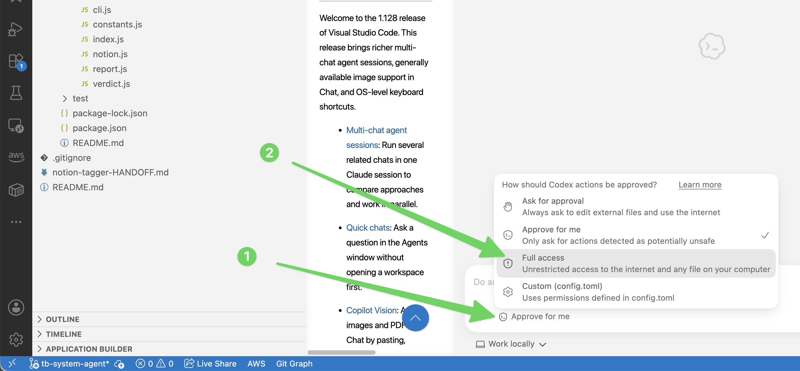
Open the approval mode menu in the Codex chat window and select Full access.
Cursor
Cursor exposes agent autonomy controls under the Agents settings. For a YOLO-style setup, switch the run mode to unsandboxed execution and allow network access.
-
Open Cursor settings from the application menu:
Cursor → Settings.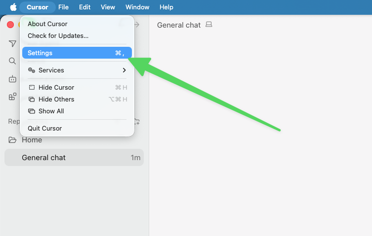
Open Cursor settings from the application menu. -
Select
Agents, open theRun Modemenu, and chooseRun Everything (Unsandboxed).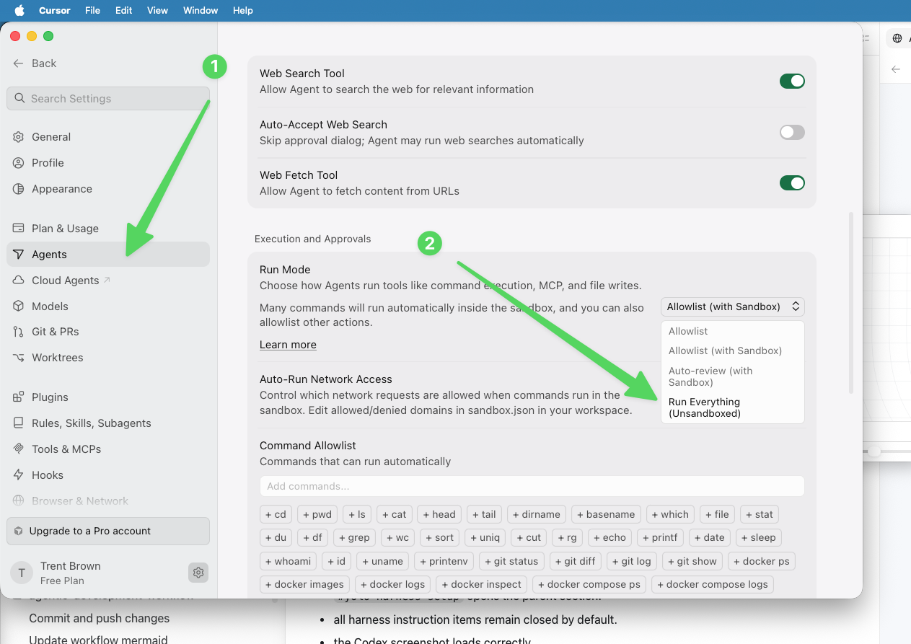
In Agents settings, set Run Mode to Run Everything (Unsandboxed). -
Open the
Auto-Run Network Accessmenu and chooseAllow All.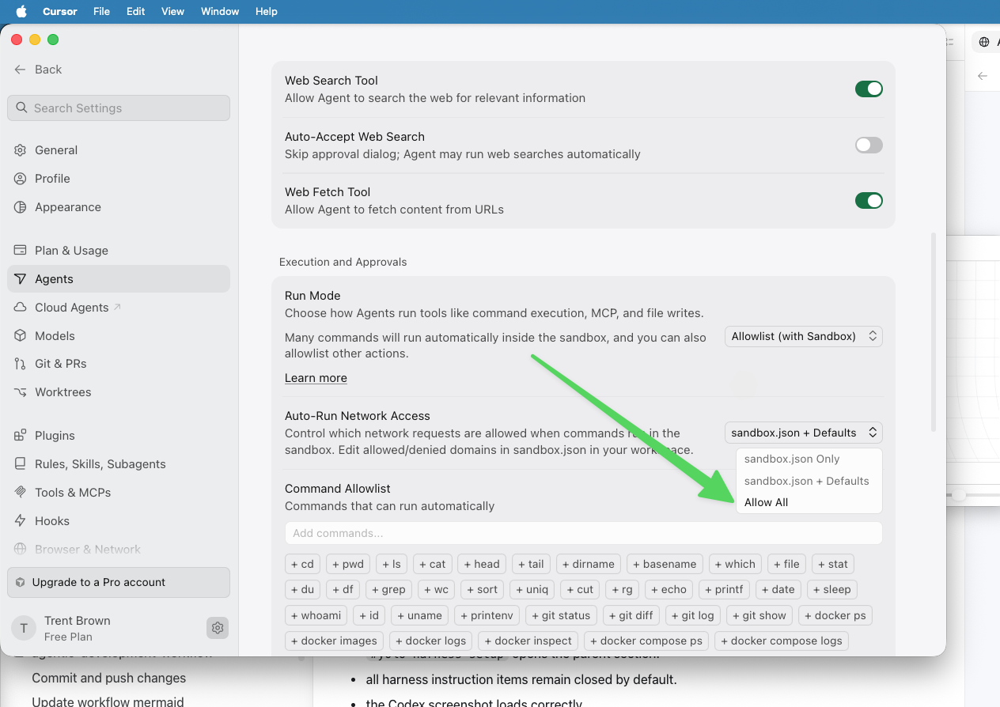
Set Auto-Run Network Access to Allow All.
Codex desktop application
The Codex desktop application exposes agent permissions in the ChatGPT desktop settings. Enable full access to let Codex run commands with network access and without approval prompts.
-
Open ChatGPT settings from the application menu:
ChatGPT → Settings.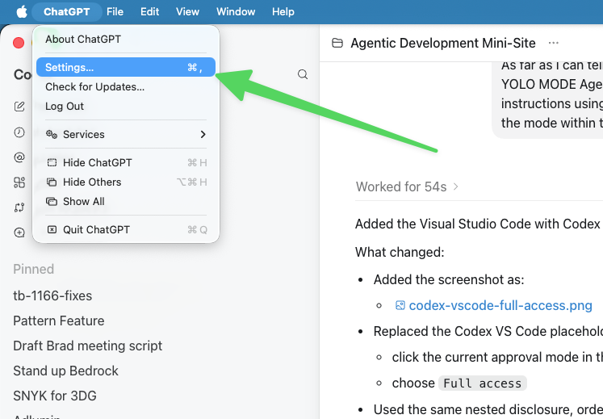
Open ChatGPT settings from the application menu. -
In
General, enable the permission toggles:Default permissions,Auto-review, andFull access.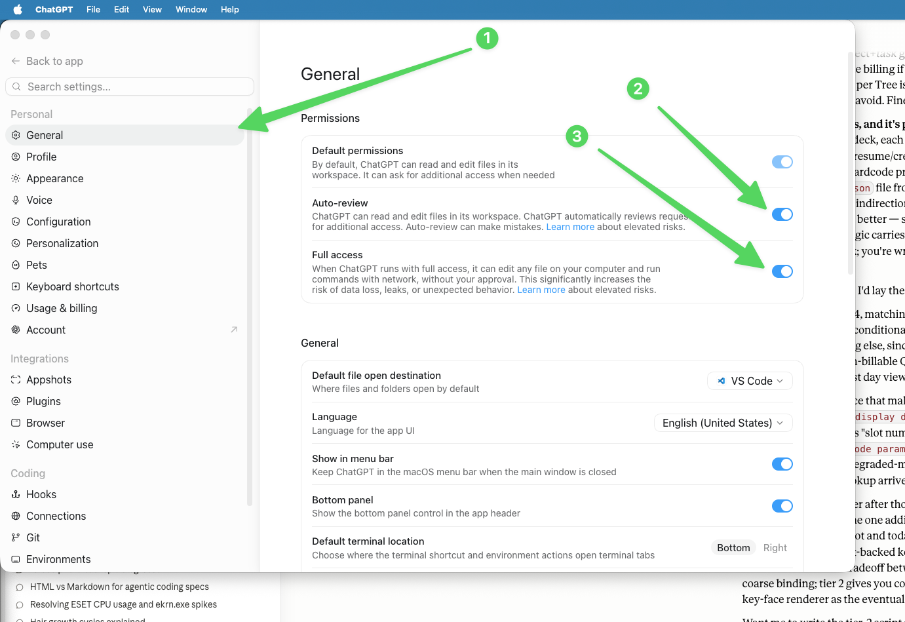
In General settings, enable Default permissions,Auto-review, andFull access.
Claude Code desktop application
The Claude desktop application exposes this through the Claude Code settings. Enable bypass permissions mode to allow Claude Code local sessions to run without repeated approval prompts.
-
Open Claude settings from the application menu:
Claude → Settings.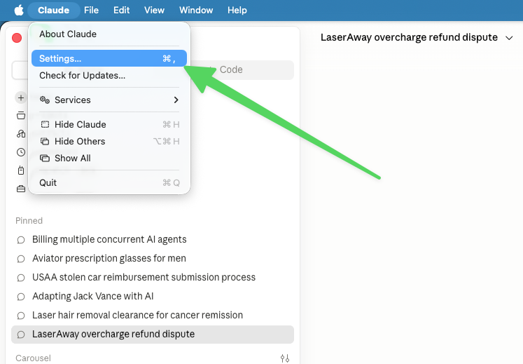
Open Claude settings from the application menu. -
Select
Claude Code, then enableAllow bypass permissions mode.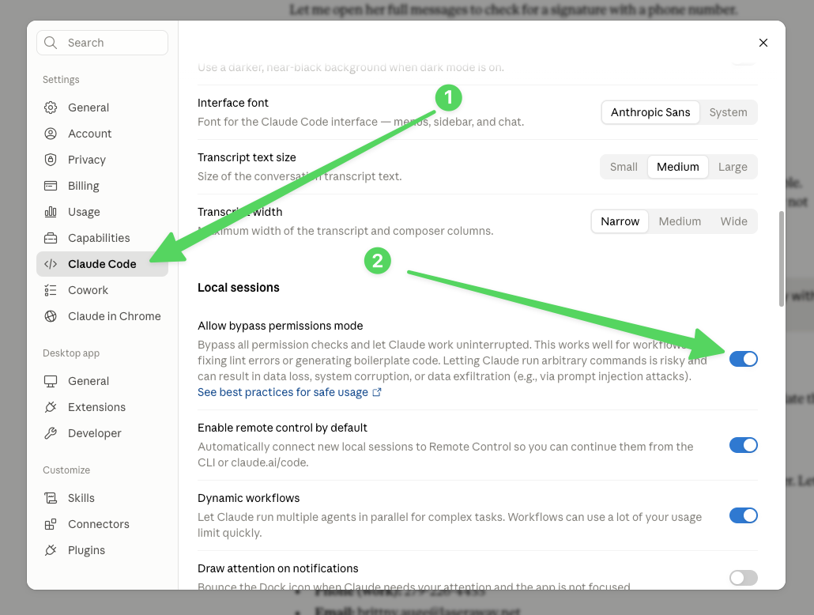
In Claude Code settings, enable Allow bypass permissions mode.
First-party desktop apps
First-party desktop apps are installed applications from model providers such as OpenAI and Anthropic. They make it easier to keep multiple agentic development sessions alive, switch attention when a session needs judgment, and give agents local context that browser chat and terminal-only interfaces do not organize as naturally.
Full-stack access
The most productive agent sessions happen when the agent can observe and operate the system directly instead of asking the developer to relay evidence by hand. Bugs and feature work rarely respect layer boundaries. A browser symptom may originate in frontend state, a backend API response, a database row, a queue message, a cloud permission, or a stale deployment. The agent needs access to enough of that stack to follow the evidence.
Git worktrees
Git worktrees are one of the highest-leverage features for agentic development. They let you create separate working directories for separate branches, so each agent session can have its own files, branch, editor state, and test runs without blocking or overwriting another session.
Voice-to-text
The current generation of AI dictation tools is materially different from old operating-system speech recognition. They handle natural speech, clean up filler, preserve intent, and produce text that is often ready to paste directly into an agent prompt, issue description, review response, or design note.
Model and effort choice
The default should usually be the strongest model and effort level that is practical for the job. For hard implementation work, review, or ambiguous debugging, the quality gains are often worth the additional time and token cost. For small mechanical edits, simple searches, or low-risk formatting, a cheaper or lower-effort setting may be enough.
Cost-benefit benchmark examples
These examples show why the external benchmark graphs are useful: they make the relationship between quality, effort, time, and task cost visible instead of relying on a single model ranking.
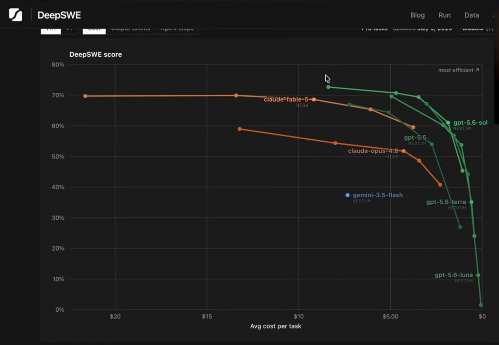
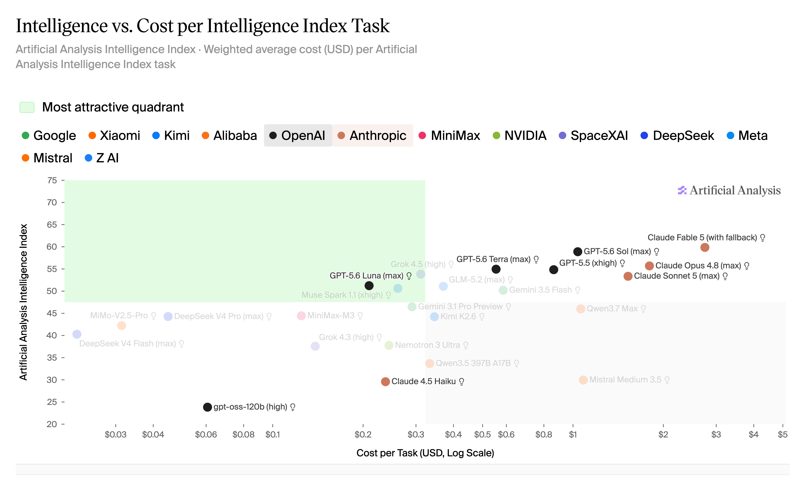
Design
Spec
design.md controls; interview.md explains
provenance and intent; the current codebase constrains feasible
contracts, architecture, and test strategy.
Branch Readiness
Implementation Loop
scratchpad.md,
updated issues.md, and tracker evidence.
PR Boundary
/judge,
PR-review,
explain-diff,
and decision triage.
Human Review
Completion
NOT YET and zero FAIL; manual checks
are explicitly identified or complete.
Run boundary review sequence
Supporting Reference
These sections provide direct access to the skill and artifact examples used throughout the workflow. They complement the gate sequence without being additional gate-detail panels.
Skill Library
Local copies of the skills referenced by the workflow. These links open
pre-rendered HTML views of each copied SKILL.md.
Workflow Skills
Pattern Review Skills
General Process Skills
Platform And Runtime Skills
Artifact Examples
These examples come from completed workflows and show the kinds of durable records the process produces at each stage.